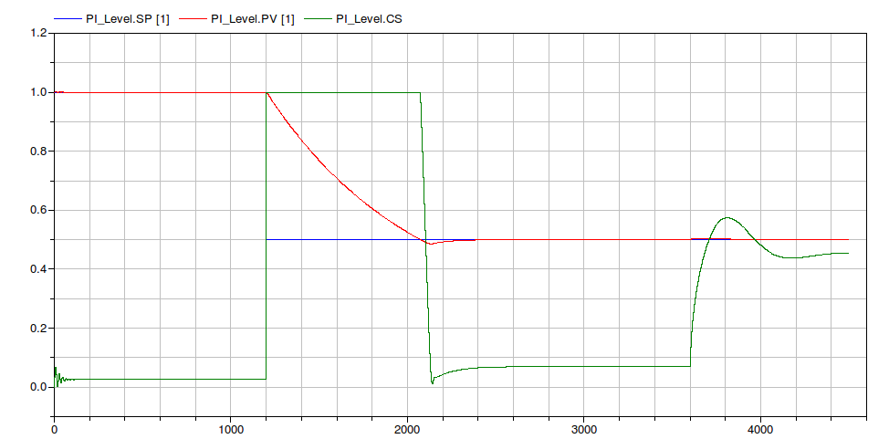
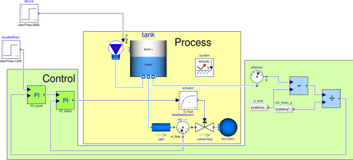

In this sub-package the library blocks are used to control true industrial processes.
Extends from IndustrialControlSystems.Icons.ExamplesPackage (Examples package icon).
| Name | Description |
|---|---|
| LevelControl | Level control with a PI controller |
| CascadeLevelControl | Cascade level control with PI controllers |
| Velocity control of an electric engine with Automatic Tuning |
Level control with a PI regulator.
The considered system is a tank filled with water. The water level is the process variable to be controlled.
The system (see the figure below) is composed by a tank and one pipe connected to a linear valve that discharges
the water in the atmosphere. The valve actuator is represented by a first order filter.
The control system is composed by the measurement part and the controller. The pressure sensor measures the absolute pressure
on the bottom of the tank.

The measured pressure is subtracted from the atmospheric pressure and then divided by the
gravity acceleration and the water density in order to obtain the water level.
level = (p - p0)/(rho*g)The PI controller, given the level measurement and the set point reference compute the control action. Such a control

Once the controller has been designed and the parameters assigned, one should introduce more details in order to simulate
a more realistic system.
At first it is possible to introduce the time discretisation and investigate the effect of the sampling time.
Here follows the results for a sapling time Ts = 5.

An additional level of detail can be the introduction of the fixed point math operation in the level measurement process.
In this case has been choosen a number of bit
Nbit = 24
this means that the integer number that can be represented are comprises between MIN = -8388609 and MAX = 8388608.
At the first stage, the measured pressure have to be subtracted of the ambient one. In the wors case, the higher pressure value
that can be read as input from the math operation block is
101325 + 1000*9.81*2 = 120945that is more or less two order of magnitude less that the higher integer number MAX. This means that the input numbers can be multiplied by a scale factor comprises between 10 and 50. In this case the scale factor that has been choosen is sFactor = 20. In a similat way the scale factor of the division can be choosen. In this case sFactor = 500.
Extends from Modelica.Icons.Example (Icon for runnable examples).
| Name | Description |
|---|---|
| Process | |
| PipeL | Pipe length [m] |
| PipeD | Pipe diameter [m] |
| Lstart | Initial water level [m] |
| H | Storage height [m] |
| A | Cross section storage area [m2] |
| Tact | Actuator dynamics |
| Controller | |
| Ts | Sampling time for the valve controller |
| Kp | Proportional gain |
| Ti | Integral time |
| AntiWindup | Flag that enables the antiwindup feature |
| CSmin | minimum value of the CS |
| CSmax | maximum value of the CS |
| CS_start | output initial value |
| Conversion | |
| FixedPoint | Use FP operations for level measurement operations |
| Nbit | number of bit for FP operations |
| scaleF_div | division scale factor |
| scaleF_sub | subtraction scale factor |
Level control with two PI controllers, connected with a cascade arrangement.
The considered system is a tank filled with water. The water level is the process variable to be controlled.
The system (see the figure below) is composed by a tank and one pipe connected to a linear valve that discharges
the water in the atmosphere. The valve actuator is represented by a first order filter.
The control system is composed by the measurement part and the controller. The pressure sensor measures the absolute pressure
on the bottom of the tank.

The measured pressure is subtracted from the atmospheric pressure and then divided by the
gravity acceleration and the water density in order to obtain the water level.
level = (p - p0)/(rho*g)The PI controller, given the level measurement and the set point reference compute the control action. Such a control
Once the controller has been designed and the parameters assigned, one should introduce more details in order to simulate a more realistic system. Please refers to the previous example ( LevelControl ) for more information.
Extends from Modelica.Icons.Example (Icon for runnable examples).
| Name | Description |
|---|---|
| Process | |
| PipeL | Pipe length [m] |
| PipeD | Pipe diameter [m] |
| Lstart | Initial water level [m] |
| H | Storage height [m] |
| A | Cross section storage area [m2] |
| Tact | Actuator dynamics |
| Controller level | |
| Ts_l | Sampling time for the valve controller |
| Kp_l | Proportional gain |
| Ti_l | Integral time |
| AntiWindup_l | Flag that enables the antiwindup feature |
| CSmin_l | minimum value of the CS |
| CSmax_l | maximum value of the CS |
| CS_start_l | output initial value |
| Controller valve | |
| Ts_v | Sampling time for the valve controller |
| Kp_v | Proportional gain |
| Ti_v | Integral time |
| CSmin_v | minimum value of the CS |
| CSmax_v | maximum value of the CS |
| CS_start_v | output initial value |
| Controller | |
| AntiWindup_v | Flag that enables the antiwindup feature |
| Conversion | |
| FixedPoint | Use FP operations for level measurement operations |
| Nbit | number of bit for FP operations |
| scaleF_div | division scale factor |
| scaleF_sub | subtraction scale factor |
 IndustrialControlSystems.Applications.ProcessControl.VelocityDriveControl_AutoTuning
IndustrialControlSystems.Applications.ProcessControl.VelocityDriveControl_AutoTuning
Velocity control of an electric engine with a PI controller.

The PI controller regulates the voltage source of the electric engine, and measures its angular velocity (corrupted by noise).
The aim of this example is to show how a controller with Automatic Tuning can be used in a real context.
In the following table are listed the controller parameters before and after the Automatic tuning
| Parameter | Before | After AT |
|---|---|---|
| Kp | 0.2 | 0.5167 |
| Ti | 0.5 | 0.1399 |
| Parameter | Value |
|---|---|
| slope | 5 |
| PermOxPeriodPerc | 5 |
| pm | 70 |
| nOxMin | 3 |
Extends from Modelica.Icons.Example (Icon for runnable examples).
Automatically generated Mon May 21 13:34:17 2012.